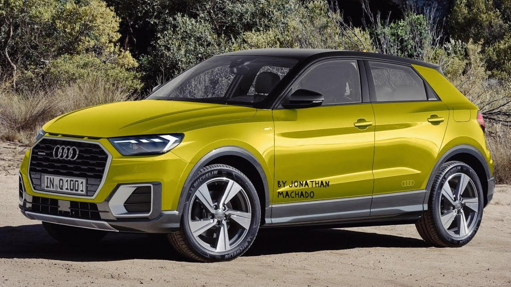
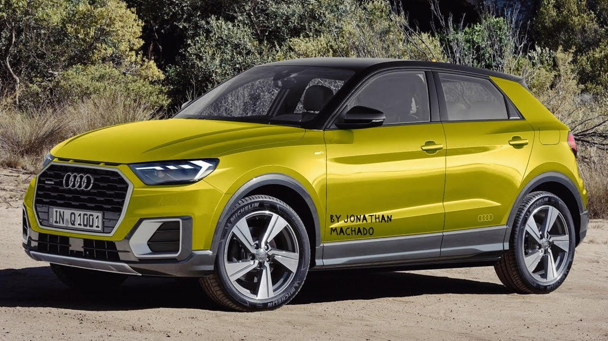

مقال ويكيبيديا عن شركة تصنيع السيارت الألمانية أودي:
هي شركة تصنيع سيارات ألمانية تصمم وتهندس وتنتج وتسوق وتوزع السيارات الفاخرة .
Audi التجارية في تسعة مرافق إنتاج حول العالم.
ولها جذورها في إنجولشتات ، بافاريا ، ألمانيا. يتم إنتاج السيارات التي تحمل علامة
أصول الشركة معقدة ،
وتعود إلى أوائل القرن العشرين والمشاريع الأولية ( Horch and Audiwerke ) التي أسسها المهندس August Horch ؛
المصنعين الآخرين ( DKW و Wanderer ) ، مما أدى إلى تأسيس اتحاد السيارات في عام 1932. بدأ العصر الحديث لأودي بشكل أساسي في الستينيات عندما
استحوذت فولكس فاجن على اتحاد السيارات من شركة دايملر بنز .
رية مع طرح سلسلة أودي F103 في عام 1965 ، قامت
فولكس فاجن بدمج اتحاد السيارات مع شركة NSU Motorenwerke في عام 1969 ، مما أدى إلى إنشاء النموذج الحالي للشركة.

